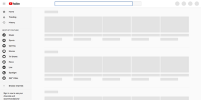

2020 Google services outages
Source: https://en.wikipedia.org/wiki/Google_services_outages
Category: company__depth2
Depth: 2
Summary
During various episodes, from 2008 onward, Google suffered from severe outages that disrupted a variety of their services. The first was a five-minute outage of every Google service in August 2013. The second was a 25-minute outage of Gmail, Google+, Google Calendar, and Google Docs in January 2014. The third was a YouTube outage in October 2018. The fourth was a Google Calendar outage in June 2019. The fifth was a Gmail/Google Drive outage in August 2020. The sixth, in November 2020, affected mainly YouTube, and the seventh, in December 2020, affected most of their services. The eighth, in August 2022, affected Google Search, Maps, Drive, and YouTube. The ninth, in October 2022, affected Google Maps and Google Street View, and many more. These outages seemed to be global.
Images

Full Article
During various episodes, from 2008 onward, Google suffered from severe outages that disrupted a variety of their services. The first was a five-minute outage of every Google service in August 2013. The second was a 25-minute outage of Gmail, Google+, Google Calendar, and Google Docs in January 2014. The third was a YouTube outage in October 2018. The fourth was a Google Calendar outage in June 2019. The fifth was a Gmail/Google Drive outage in August 2020. The sixth, in November 2020, affected mainly YouTube, and the seventh, in December 2020, affected most of their services. The eighth, in August 2022, affected Google Search, Maps, Drive, and YouTube. The ninth, in October 2022, affected Google Maps and Google Street View, and many more. These outages seemed to be global.
Early disruptions
Starting on 24 February 2008 at 18:47 UTC, YouTube was unavailable for around two hours because Pakistan Telecom, a Pakistani telecommunication company, had mistakenly claimed YouTube's IP address space intended to block access to YouTube within Pakistan; the Border Gateway Protocol data was accidentally broadcast to other service providers. Pakistan Telecom accidentally propagated the route to its international data carrier, PCCW Ltd. The PCCW then accepted that route. It directed requests from YouTube's visitors to other internet service providers worldwide, causing a major YouTube outage out of Pakistan.
On 6 August 2008, from 22:00 to 13:00 on the next day, Google Apps went down; some Gmail users were also unable to access their email. Users have gotten an HTTP 502 server error.
On 31 January 2009, Google flagged the whole internet on a 'malware or dangerous websites' blacklist for around 40 minutes before the unintentional flags were fixed. The staggered error update was up from 14:27 to 15:25 UTC. They stated that their malware detector was updated such that "the URL of '/' was mistakenly checked in as a value to the file and '/' expands to all URLs." The malware detector had flagged all websites and shown this message in the search list: "This site may harm your computer".
On 14 May 2009, some Google Apps users were unable to access their accounts from 14:48 to 16:05 UTC. Some users received a 400-series timeout error. Later, an outage that started at 15:48 UTC caused many of Google's services, including YouTube, Gmail, Google Maps, and Google AdSense, to be slowed down. Google in its blog has stated that an error in their system caused it to direct some of the web traffic through Asia, and that "14% of our users experienced slow services or even interruptions".
On 16 August 2013, every Google service went down for five minutes; that is from 22:52 to 22:57 UTC. The outage caused internet traffic to drop forty percent worldwide. Between 23:51 and 23:52 UTC, 50–70% of requests to Google received errors. It has been estimated that the blackout could cost Google around £330,000.
On 24 January 2014, Gmail, Google+, Google Calendar, and Google Docs suffered a 25-minute outage. A statement by Google described the cause:
At 10:55 a.m. PST this morning, an internal system that generates configurations—essentially, information that tells other systems how to behave—encountered a software bug and generated an incorrect configuration. The incorrect configuration was sent to live services over the next 15 minutes, caused users’ requests for their data to be ignored, and those services, in turn, generated errors. Users began seeing these errors on affected services at 11:02 a.m., and at that time our internal monitoring alerted Google’s Site Reliability Team. Engineers were still debugging 12 minutes later when the same system, having automatically cleared the original error, generated a new correct configuration at 11:14 a.m. and began sending it; errors subsided rapidly starting at this time. By 11:30 a.m. the correct configuration was live everywhere and almost all users’ service was restored.
Yahoo consequently tweeted about the update along with an image of the error message received from the update. Yahoo later took down the original tweet a day later and apologized.
2018 YouTube outage
During the 2018 FIFA World Cup, YouTube TV went down briefly during the match between Croatia and England on July 11. The downtime was in the United States, nationwide. The outage lasted for over an hour. It was then back up before 21:00 UTC (13:00 PT).
On 16 October 2018, a global outage disrupted YouTube for approximately one hour and 2 minutes, YouTube Music and YouTube TV were affected as well. Upon opening, the website did not display any videos, but did show the sidebar. On the app, an error message read, "There was a problem with the network [503]." HTTP 503 and HTTP 500 error messages were reported. During the outage, the hashtag #YouTubeDown was trending on Twitter, Instagram, and other social media platforms. The YouTube trending page was still accessible, though it was not possible to play any video. YouTube acknowledged that on Twitter.
| Team YouTube (@TeamYouTube) tweeted: |
Thanks for your reports about YouTube, YouTube TV and YouTube Music access issues. We're working on resolving this and will let you know once fixed. We apologize for any inconvenience this may cause and will keep you updated.
16 October 2018
After 1 hour and 2 minutes of outage, YouTube was fixed.
2019 Google Calendar outage
On 18 June 2019, Google Calendar was down from around 15:00 to 17:40 UTC worldwide. Calendar users get a 404 error message through their browsers during the downtime.
2020 services outage
August 2020 services outage
On 20 August 2020, over a period of approximately six hours, a global outage abruptly disrupted Google's suite of services, including Gmail, Google Drive, Google Docs, Google Meet, and Google Voice. The outage is reported to have started around 06:30 UTC. Google acknowledged the worldwide disruption in the G Suite Status Dashboard. Users complained that they were unable to upload files to Gmail, transfer files, and upload files to Google Drive. There were also reports that some users were unable to log in to their Gmail accounts. The reason for the technical issue is not publicly known.
November 2020 YouTube/Google TV outage
On 11 November 2020, another outage occurred on YouTube, YouTube Music, YouTube TV, Google TV, and Google Play. The outage started at roughly 12:20 UTC. Users experienced problems playing videos, error messages, and errors that caused loading loops. At 04:13 UTC, YouTube gave the all-clear on its Twitter.
December 2020 services outage
On 14 December 2020, another global outage occurred, affecting authenticated users of most Google services, including Gmail, YouTube, Google Drive, Google Docs, Google Calendar, and Google Play. The problem was due to a failure in Google Accounts; services such as YouTube were still accessible with private browsing. Google Workspace Status Dashboard showed all services as operational for approximately 40 minutes before correctly reporting their status as down. The outage also affected Google's Home smart speakers.
Later, Google Cloud Platform and Google Workspace experienced a global outage, affecting all services that require Google account authentication for 50 minutes from approximately 11:45 to 12:35 UTC. Google identified the issue as an accidental reduction of capacity on their central user ID management system, causing requests that required OAuth-based authentication to fail; this also included the Google Cloud Platform. The outage started at approximately 11:43 UTC. At 12:22 UTC, Google disabled the quota enforcement in one datacenter; this practice was implemented in all datacenters by 12:27 UTC. All impacted Google services were later restored at around 12:32–12:33 UTC. On 15 December 2020, many emails sent to Gmail servers reported a 550 error code, which incorrectly indicates that the email address does not exist.
2022–present services outage
On 8 August 2022, Google Search, Maps, Drive, and YouTube went down, returning HTTP 500 and HTTP 502 errors. Even Google’s main home page was taking longer than usual to load. After their services went back online, Google apologized and stated that a software update issue was to blame. The #GoogleDown hashtag became trending on Twitter. In the United States, DownDetector reported that more than 40,000 people reported that Google was not working.
Another unrelated incident happened at 06:00 UTC on the same day as the outage, in which a data center in Council Bluffs, Iowa, caught fire; Google has stated that this case is actually not related to the outage.
On 16 October 2022, Google Maps and Street View went down, resulting in an inability for photos to load and an inability for Street View to function. Some Google for Education users with an under-18 age setting enabled were also unable to access the Google Drive iOS application from 14:17 to 21:48 UTC.
On 18 May 2023, during the NBA Eastern Conference Finals, YouTube TV went down on the TNT broadcast during the last five minutes of the Boston Celtics and Miami Heat game. Users got an error message while watching the broadcast during the downtime. The error message stated that "TNT is temporarily down [sic] We're working on it and we'll be back soon." Some users experienced TNT's feed repeatedly playing an ad for the 2023 The Little Mermaid movie. Later, on the same day, YouTube TV stated that the problem had been fixed. On 19 May, YouTube TV tweeted about it.
On 23 October 2024, Google Cloud's europe-west3 region in Frankfurt, Germany, experienced an outage for half a day. The outage began from 02:22 to 10:01 UTC. The affected infrastructure's traffic was diverted away at 04:43 UTC. Google stated that a power failure in one of the region's three zones, europe-west3-c, led to an electrical arc, leading them to partially shut down the zone to avoid thermal damage since the building's cooling infrastructure was also degraded.
On 4 September 2025, all Google services went down in Turkey and Eastern Europe, from around 8:10 AM to 11:18 AM UTC.
On 15 October 2025, YouTube experienced major outages in the U.S., UK, and Canada, with users unable to watch videos on the mobile app due to playback errors. Streaming music through YouTube Music failed for the same reasons. More than 1,000,000 users reported this according to DownDetector.
On February 17, 2026, the YouTube website and mobile apps experienced major outages starting around 12:45 AM UTC, with users encountering an inability to access the subscriptions tab, Shorts, or the homepage. Users were still able to access and search for videos, but the recommendations system did not work. Logging in through YouTube TV was causing issues for some users. YouTube Kids and YouTube Music were also affected by the outage. Over 1.6 million user reports were submitted to DownDetector.
See also
- Criticism of Google
- 2021 Facebook outage and 2024 Facebook outage
- Microsoft Azure outages
- Amazon Web Services outages
- Downtime
References
| - v - t - e Google | |
|---|---|
| a subsidiary of Alphabet | |
| Company | |
| Development | |
| Software | |
| Hardware | |
| - v - t - e Litigation | |
| Related | |
| Italics denote discontinued products. - Category - Outline |